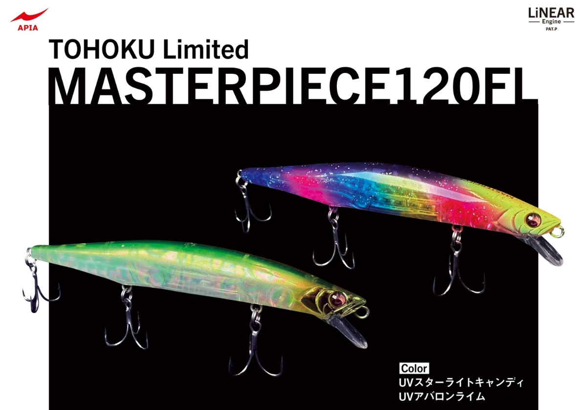

フィッシングショーin東北2026限定ルアーまとめ
フィッシングショーin東北2026では、各メーカーから限定カラーや特別仕様モデル、 会場限定アイテム、先行販売ルアーなど注目商品が多数登場します。
この記事では、イベントでチェックしておきたい限定ルアーをメーカー別に整理し、 スペックや特徴をわかりやすくまとめました。購入候補の比較や、当日のブース回りの参考にしてください。
目次
フィッシングショーin東北2026とは
フィッシングショーin東北2026は、人気メーカーの新製品や限定アイテム、 実釣派に嬉しいイベント限定ルアーなどをチェックできる注目の釣りイベントです。
限定ルアーは数量が少ないことも多く、ブースによっては整理券対応や早期完売もありえます。 気になるメーカーがある場合は、事前にチェックして優先順位を決めておくのがおすすめです。
限定ルアーまとめの見どころ
- イベント限定カラーや特別仕様モデルをまとめて比較できる
- メーカーごとの注目アイテムを一覧で把握しやすい
- 売り切れ前に狙いたいルアーの候補を整理しやすい
- 個別メーカー記事への導線としても活用できる
BlueBlueの限定ルアー
BlueBlueは毎回注目度の高い限定ルアーを用意してくる人気メーカーです。 定番シリーズの派生モデルや、特別カラー、会場でしか手に入りにくい仕様が並ぶこともあり、 限定物販の中でも特に注目を集めやすいメーカーのひとつです。
Blooowin!80F

- メーカー
- BlueBlue
- 長さ
- 80mm
- 重さ
- 7g
- タイプ
- フローティングミノー
- アクション
- S字ダブルアクション
- ターゲット魚種
- シーバス
- カラー
- ずんだカラー
- 価格
- ¥1,800(税込)
Blooowin!80F（ブローウィン80F）は、Blooowin!80Sのフローティング仕様モデルです。 80Sより1g軽く、シャロー帯をより攻めやすいのが魅力。根がかりを避けながら表層～浅いレンジを探りたい場面で活躍が期待できます。
キビキビとしたアクションで使いやすく、黄色い目玉がオリジナルとの見分けポイントです。 ランカーシーバスの実績もすでにあり。
OUTSTAR120SS

- メーカー
- BlueBlue
- 長さ
- 120mm
- 重さ
- 17.6g
- タイプ
- スローシンキングペンシル
- アクション
- 引き波+パニックダート
- ターゲット魚種
- シーバス
- カラー
- 赤べこ
- 価格
- ¥2,500(税込)
OUTSTAR120SS（アウトスター120SS）は、アウトスター120Sを軽量化してスローシンキング化したモデルです。 より上のレンジを引きやすく、シャロー攻略やバチ抜け時期にも相性が良さそうな仕様です。
赤べこカラーは東北仕様で大人気！
DUOの限定ルアー
DUOはフィッシングショーin東北2026で、BeachWalkerシリーズを中心に限定アイテムを展開。 人気カラーの限定仕様に加え、ミノー・フラット用ルアー・ワーム系まで幅広くそろっており、 サーフやシーバス狙いのアングラーは特に注目したい内容です。
今回のDUO限定アイテムは、UV・GLOW系カラーが多く、アピール力を重視したラインナップが目立ちます。 ここでは、画像で確認できた内容をもとに、種類・価格・カラーを簡潔にまとめます。
BeachWalker チェンジャー105S
- 種類
- シンキングペンシル
- 価格
- ¥2,300(税込)
- カラー
- UVチャートマリアージュ / ラブラドベイトGB
限定カラーはUVチャート系とベイト系GLOWの2色で、サーフでの視認性とアピール力を重視したい人に気になる1本です。
BeachWalker リンバー95S
- 種類
- ミノー
- 価格
- ¥2,100(税込)
- カラー
- UVチャートマリアージュ / ラブラドベイトGB
95Sサイズのリンバーも限定カラー2色で登場。
BeachWalker 135MD
- 種類
- シンキングミノー
- 価格
- ¥3,000(税込)
- カラー
- UVチャートマリアージュ
限定のUVチャートマリアージュは濁りやローライト時にも目立ちやすいカラーです。
BeachWalker フリッパーMB22
- 種類
- ブレードメタルジグ
- 価格
- ¥1,600(税込)
- カラー
- ずんだGB
フリッパーMB22は、コンパクトで使いどころの広いブレードジグ。 ずんだGBの限定カラーは個性があり、イベント限定品らしさも強い1本です。
BeachWalker フリッパーiT38
- 種類
- メタルジグ
- 価格
- ¥2,200(税込)
- カラー
- UVチャートマリアージュ
フリッパーiT38は、BeachWalkerらしい実戦向けモデル。 UVチャートマリアージュの限定カラーで、視認性とアピール力を両立した仕様です。
タイドミノースペクター135SSR
- 種類
- シャローミノー
- 価格
- ¥2,500(税込)
- カラー
- RPグローチャートバックOB / 三陸サトウクジラ
135SSRの大型ミノー。グロー系のチャートバックに加えて、 三陸らしさを感じる「三陸サトウクジラ」カラーも用意され、限定感の強いラインナップです。
テリフDC12 タイプI
- 種類
- ミノー
- 価格
- ¥2,200(税込)
- カラー
- UVゲノムキャンディRH
テリフDC12 タイプIは、細身シルエットで使いやすいミノー。 UVゲノムキャンディRHの限定カラーで、派手さとベイト感を両立した印象です。
TETRA WORKS アジングワーム各種
- 種類
- ワーム
- 価格
- ¥600(税込)
- ラインナップ
- チビバーニー / バーニー / ピピン / ピューズ / デリー
TETRA WORKSはワーム系アイテムが各種展開。 価格も手に取りやすく、ライトゲーム向けの限定アイテムとしてチェックしやすい内容です。
DUO限定アイテムのポイント
- BeachWalkerシリーズ中心で、サーフ向けルアーが充実
- UV・GLOW系カラーが多く、アピール重視の内容
- ミノー、メタル系、ワームまで幅広くそろっている
LEGAREの限定ルアー
LEGAREはフィッシングショーin東北2026で、限定カラーやコラボモデルを展開。 シーバス向けルアーを中心に、遊び心のあるカラーやイベント限定感の強いアイテムがそろっています。
今回のLEGARE限定アイテムは、DIMOR70やREGALIA100などの定番モデルに加えて、 カスタムベース仕様やコラボ系ビッグベイトも並ぶ内容です。 ここでは、画像で確認できた内容をもとに、種類・価格・カラーを簡潔にまとめます。
DIMOR70 BONE ORCA
- 種類
- バイブレーション
- 価格
- ¥1,600
- カラー
- BONE ORCA
DIMOR70の限定カラー「BONE ORCA」。 骨格を思わせるインパクトの強いデザインで、イベント限定らしさが際立つ1本です。
DIMOR70 カクレクマノミ
- 種類
- バイブレーション
- 価格
- ¥1,600
- カラー
- カクレクマノミ
DIMOR70の遊び心ある限定カラー。 クマノミをモチーフにした配色で、見た目のインパクトを重視したい人にも気になるモデルです。
DIMOR70 麗牙亜零
- 種類
- バイブレーション
- 価格
- ¥1,600
- カラー
- 麗牙亜零
DIMOR70のブラックベース限定カラー。 和風テイストの強いネーミングも印象的で、コレクション性も高そうな1本です。
REGALIA100 ブルーライト
- 種類
- シンキングペンシル
- 価格
- ¥1,800
- カラー
- ブルーライト
REGALIA100の限定カラー「ブルーライト」。 クリア感のあるブルー系カラーで、見た目の美しさと限定感が魅力です。
REGALIA100 セブンスパープル
- 種類
- シンキングペンシル
- 価格
- ¥1,800
- カラー
- セブンスパープル
REGALIA100の限定カラー「セブンスパープル」。 パープル系の個性的な配色で、定番色とは違うイベント限定感を楽しめるモデルです。
UNIFORCE100F カスタムベースver2
- 種類
- フローティングミノー系
- 価格
- ¥2,500
- カラー
- カスタムベースver2
UNIFORCE100Fのカスタムベース仕様。 ベースカラー寄りのシンプルなデザインで、特別仕様モデルとして注目したい1本です。
REGALIA100 カスタムベースver2
- 種類
- シンキングペンシル
- 価格
- ¥1,600
- カラー
- カスタムベースver2
REGALIA100のカスタムベース仕様。 通常カラーとは違った特別感があり、イベント限定品としてチェックしておきたいモデルです。
SHURIPEN55 カスタムベースver2
- 種類
- シンキングペンシル
- 価格
- ¥1,100
- カラー
- カスタムベースver2
SHURIPEN55のカスタムベース仕様。 コンパクトサイズで、ライト寄りの使い方やコレクション用としても気になる1本です。
Davinci150 ORCA
- 種類
- ビッグベイト
- 価格
- ¥5,000
- カラー
- ORCA
Davinci150 ORCAは、存在感の強いコラボ系ビッグベイト。 シャチを思わせるカラーリングが特徴で、今回のLEGARE限定品の中でも特に目を引くアイテムです。
LEGARE限定アイテムのポイント
- DIMOR70は個性的な限定カラーが充実
- REGALIA100はカラー違いとカスタムベース仕様を展開
- Davinci150 ORCAはコラボ感と存在感が強い注目モデル
DUELの限定アイテム
DUELはフィッシングショーin東北2026で、エギ・ハードルアー・キャップまで幅広く限定アイテムを展開。 釣種の幅が広く、エギング向け、ソルト向け、トラウト向けまでそろっているのが特徴です。
今回のDUEL限定アイテムは、人気シリーズの限定カラーが中心。 見た目のインパクトが強いカラーが多く、イベント限定品らしい特別感を楽しめるラインナップです。
イージーQ マグネットTG 3.0号
- 種類
- エギ
- 価格
- ¥1,500(税込)
- カラー
- バレンシア / マーブルサクラダイ
イージーQ マグネットTG 3.0号は、東北限定カラー2色で登場。 明るく目立つ配色がそろっており、エギングファンには気になる限定モデルです。
アオリーQ 3.0号
- 種類
- エギ
- 価格
- ¥1,100(税込)
- カラー
- チョコミント / プリン
アオリーQ 3.0号も限定カラー2色で展開。 名前の印象どおり遊び心のあるカラーで、イベント限定らしさを楽しみたい人にぴったりです。
ハードコア モンスターショット 65S / 80S / 95S
- 種類
- シンキングペンシル
- 価格
- 65S：¥1,600(税込) / 80S：¥1,700(税込) / 95S：¥1,800(税込)
- カラー
- マットグリーンカモ/マットブラックグローフィッシュボーン
ハードコア モンスターショットは、サイズ別で価格が分かれた限定展開。 カモ柄とボーン系の個性的なカラーがそろい、青物や回遊魚狙いで目を引く1本になりそうです。
LaTour アイジー65F
- 種類
- トップウォーター
- 価格
- ¥1,700(税込)
- カラー
- 漆黒ブラック / 白雪ホワイト
アイジー65Fは、対照的なブラックとホワイトの限定カラーで登場。 シンプルながら限定感が強く、見た目の完成度も高いアイテムです。
トラウト ストゥープ 70SF / 90F
- 種類
- トラウトミノー
- 価格
- 70SF：¥1,500(税込) / 90F：¥1,600(税込)
- カラー
- 赤鬼（70SF） / イクラパーマーク（90F）
トラウト ストゥープは、70SFと90Fでそれぞれ限定カラーを用意。 70SFは「赤鬼」、90Fは明るいベイト調カラーで、トラウト向け限定品として注目しやすい内容です。
フラットキャップ
- 種類
- グッズ
- 価格
- ¥3,500(税込)
- カラー
- リミテッドカラー
ルアー以外ではDUELのフラットキャップも限定販売。 オールブラックのデザインで使いやすく、イベント記念グッズとしても魅力があります。
DUEL限定アイテムのポイント
- エギ、ソルトルアー、トラウト、グッズまでジャンルが幅広い
- 限定カラー名に遊び心があり、イベント限定感が強い
- モンスターショットはサイズ別で選びやすい構成
- ルアーだけでなくキャップもあり、物販全体として見応えがある
POP SEA CREWの限定ルアー
BANQ82S HEAVY
- 種類
- シンキングペンシル
- 価格
- ¥1,980(税込)
- カラー
- 限定カラー
コンパクトながらしっかりアピールできるモデルとして注目したい1本です。
fimoの限定ルアー
fimoはフィッシングショーin東北2026で、人気ルアー4種類を出品。 ラインナップはスネコン90TG、アウトスター120S、BANQ120S、CANNA15で、 カラーは横浜フィッシングショーと同じ仕様となっています。
今回のfimo限定アイテムは、注目度の高いモデルがそろっているのが特徴です。 ここでは、現時点でわかっている内容をもとに、種類・価格・カラーを簡潔にまとめます。
スネコン90TG
- 種類
- シンキングペンシル
- 価格
- ¥2,800(税込)
- カラー
- ギャラルコズミック
スネコン90TGは、スネコンらしいS字アクションを活かせる注目モデル。 東北会場でも横浜フィッシングショーと同じカラーで展開される予定です。
アウトスター120S
- 種類
- シンキングペンシル
- 価格
- ¥2,600(税込)
- カラー
- ギャラルコズミック
アウトスター120Sは、飛距離とアピール力のバランスが魅力のモデル。 こちらも横浜フィッシングショーと同じカラーで販売予定です。
BANQ120S
- 種類
- シンキングペンシル
- 価格
- ¥2,800(税込)
- カラー
- ギャラルグリーン / グレアダラ
BANQ120Sも今回のfimo出品アイテムのひとつ。 限定カラーはギャラルグリーンとグレアダラで、存在感のある配色が魅力です。
CANNA15
- 種類
- バイブレーション
- 価格
- ¥1,700(税込)
- カラー
- ギャラルグリーン / グレアダラ
CANNA15は、コンパクトに使えるバイブレーションとして注目したいモデル。 他の限定ルアーとあわせて、横浜フィッシングショーと同じカラーで展開されます。
fimo限定アイテムのポイント
- スネコン90TG、アウトスター120S、BANQ120S、CANNA15の4種類を展開
- カラーは横浜フィッシングショーと同じ仕様
- ギャラルコズミック、ギャラルグリーン、グレアダラなど限定感のあるカラーがそろう
JADOの限定ルアー
JADOはフィッシングショーin東北2026で、25th Anniversaryカラーの限定ルアーを販売。 定番人気モデルに特別感のあるアニバーサリー仕様が加わり、JADOファンは見逃せない内容です。
今回確認できているのは、乱牙75とアーダ零999（スリーナイン）の25周年記念カラーです。 ここでは、現時点でわかっている内容をもとに、種類・カラーを簡潔にまとめます。
乱牙75 25th Anniversaryカラー
- 種類
- バイブレーション
- 価格
- ¥2,300(税込)
- カラー
- 25th Anniversaryカラー
乱牙75は、JADOの人気モデルのひとつ。 今回は25th Anniversaryカラーとして販売され、通常版とは違う特別感を楽しめる限定モデルとなっています。
アーダ零999（スリーナイン） 25th Anniversaryカラー
- 種類
- シャローミノー
- 価格
- ¥2,500(税込)
- カラー
- 25th Anniversaryカラー
アーダ零999（スリーナイン）も、25th Anniversaryカラーで登場。 JADOらしい存在感のある人気モデルを、記念仕様で手に入れたい人は要チェックです。
APIAの限定ルアー
APIAはフィッシングショーin東北2026で、MASTERPIECE120FLの東北限定カラーを展開。 存在感のあるカラーリングが特徴で、会場限定モデルとして注目したい内容です。
MASTERPIECE120FL（マスターピース）

- 種類
- フローティングミノー
- カラー
- UVスターライトキャンディ / UVアバロンライム
MASTERPIECE120FLは、APIAの東北限定モデルとして登場。 レインボー調の華やかなUVスターライトキャンディと、発色の強いUVアバロンライムの2色が用意されています。
限定カラーらしいインパクトがあり、実釣用としてはもちろん、コレクションにも気になる1本です。
ルアーの特徴や通常モデルの詳細は、MASTERPIECE120FLの紹介記事でもチェックできます。
LONGINの限定ルアー
LONGINはフィッシングショーin東北2026で、IRIKOの東北限定セットを展開。 北上川で実績のある2ウェイトをベースに、特注ブレード付きのテスト販売モデルとして登場します。
今回確認できているのは、IRIKO 35gと28gの東北限定仕様です。 ここでは、現時点でわかっている内容をもとに、種類・価格・付属内容を簡潔にまとめます。
IRIKO 35g / 28g

- 種類
- ブレード付きメタルバイブ / 鉄板バイブ系
- 価格
- ¥2,000(税込)
- ウェイト
- 35g / 28g
- 仕様
- 特注ブレード搭載・東北限定テスト販売
- 付属ブレード
- リアルブレード / シルバー / ゴールド
IRIKOは、北上川で実績のある35gと28gの2ウェイトが東北限定仕様で登場。 特注ブレードを搭載したうえで、交換用ブレード3枚セットが付くお得な内容になっています。
ブレードはリアルブレード、シルバー、ゴールドの3種類が用意されており、 状況に合わせて使い分けしやすいのも魅力です。
LONGIN限定アイテムのポイント
- IRIKOの28g・35gを東北限定で展開
- 特注ブレード搭載のテスト販売モデル
- リアルブレード、シルバー、ゴールドの3枚セット付き
- ¥2,000(税込)で内容がかなりお得
会場で限定ルアーを狙うポイント
- 人気メーカーは整理券対応の有無を事前に確認しておく
- 総合記事で候補を絞ってから会場を回る
- 限定カラーと通常カラーの違いを事前に把握しておく
- 個別メーカー記事もあわせて見ておくと、迷いにくい
関連リンク
本日のオススメルアーはこちら